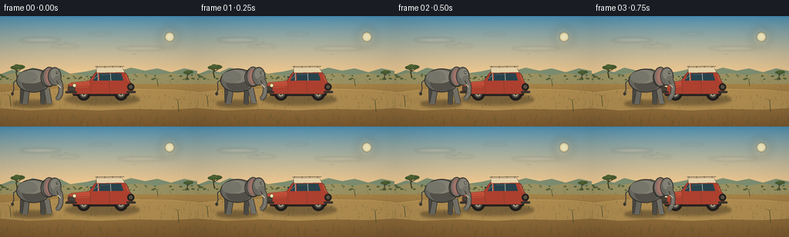
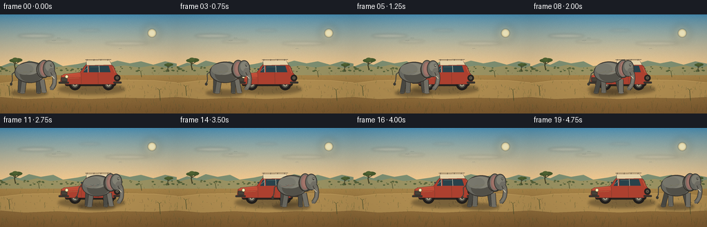
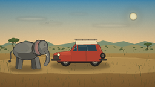
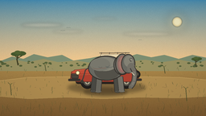
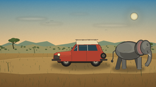

CODING AGENTS AS PIXEL WORLD MODELS
traex/DeepSeek-V4.1-Flash · dynamic_spatial_relationship_0065
点击播放 · 原生 RGB 像素
逐轮保存的候选
回放视频、检查图与代码变化。
每份候选均可单独播放。实际图片检查记录在下方工具轨迹中。
候选 01播放与检查图
点击播放 · 原生 RGB 像素

展开代码变化
--- 上一保存版本
+++ 本次保存版本
@@ -0,0 +1,533 @@
+from __future__ import annotations
+
+import math
+from pathlib import Path
+
+import numpy as np
+from PIL import Image, ImageDraw, ImageFilter
+
+import artifact_io
+
+
+W, H = 256, 144
+N, FPS = 20, 4.0
+SS = 4
+SW, SH = W * SS, H * SS
+
+
+def sx(value: float) -> int:
+ return int(round(value * SS))
+
+
+def box(x0: float, y0: float, x1: float, y1: float) -> tuple[int, int, int, int]:
+ return sx(x0), sx(y0), sx(x1), sx(y1)
+
+
+def point(x: float, y: float) -> tuple[int, int]:
+ return sx(x), sx(y)
+
+
+def scaled(points: list[tuple[float, float]]) -> list[tuple[int, int]]:
+ return [point(x, y) for x, y in points]
+
+
+def alpha_ellipse(
+ layer: Image.Image,
+ bounds: tuple[float, float, float, float],
+ fill: tuple[int, int, int, int],
+ blur: float = 0.0,
+) -> None:
+ ellipse = Image.new("RGBA", layer.size, (0, 0, 0, 0))
+ ImageDraw.Draw(ellipse).ellipse(box(*bounds), fill=fill)
+ if blur:
+ ellipse = ellipse.filter(ImageFilter.GaussianBlur(blur * SS))
+ layer.alpha_composite(ellipse)
+
+
+def make_background() -> Image.Image:
+ rng = np.random.default_rng(20261110)
+ y = np.arange(SH, dtype=np.float32)[:, None]
+ image = np.zeros((SH, SW, 3), dtype=np.float32)
+
+ horizon = 77.0 * SS
+ sky_t = np.clip(y / horizon, 0.0, 1.0)
+ top = np.array([70, 145, 186], dtype=np.float32)
+ low = np.array([245, 201, 141], dtype=np.float32)
+ curve = sky_t**0.72
+ sky = top[None, :] * (1.0 - curve) + low[None, :] * curve
+ image[:] = sky[:, None, :]
+
+ ground_t = np.clip((y - horizon) / (SH - horizon), 0.0, 1.0)
+ near = np.array([177, 142, 78], dtype=np.float32)
+ far = np.array([126, 91, 48], dtype=np.float32)
+ ground = near[None, :] * (1.0 - ground_t) + far[None, :] * ground_t
+ mask = y >= horizon
+ image[mask[:, 0]] = ground[mask[:, 0], None, :]
+
+ grain = rng.normal(0.0, 3.2, (SH, SW, 1)).astype(np.float32)
+ image += grain
+ image = np.clip(image, 0, 255).astype(np.uint8)
+ base = Image.fromarray(image, "RGB").convert("RGBA")
+
+ # Warm sun and a restrained atmospheric glow.
+ glow = Image.new("RGBA", base.size, (0, 0, 0, 0))
+ gd = ImageDraw.Draw(glow)
+ gd.ellipse(box(207, 15, 232, 40), fill=(255, 225, 157, 48))
+ glow = glow.filter(ImageFilter.GaussianBlur(5.0 * SS))
+ base.alpha_composite(glow)
+ glow2 = Image.new("RGBA", base.size, (0, 0, 0, 0))
+ gd = ImageDraw.Draw(glow2)
+ gd.ellipse(box(214, 21, 226, 33), fill=(255, 231, 167, 185))
+ gd.ellipse(box(216, 23, 224, 31), fill=(255, 244, 199, 220))
+ glow2 = glow2.filter(ImageFilter.GaussianBlur(0.55 * SS))
+ base.alpha_composite(glow2)
+
+ # Thin cloud bands catch the low sun.
+ clouds = Image.new("RGBA", base.size, (0, 0, 0, 0))
+ cd = ImageDraw.Draw(clouds)
+ for cx, cy, rx, ry, a in [
+ (52, 31, 26, 2.4, 62),
+ (84, 39, 19, 1.8, 48),
+ (183, 42, 31, 2.2, 50),
+ (130, 23, 15, 1.5, 40),
+ ]:
+ cd.ellipse(box(cx - rx, cy - ry, cx + rx, cy + ry), fill=(255, 236, 208, a))
+ clouds = clouds.filter(ImageFilter.GaussianBlur(1.6 * SS))
+ base.alpha_composite(clouds)
+
+ draw = ImageDraw.Draw(base)
+
+ # Distant escarpments, kept low enough to preserve the horizon.
+ draw.polygon(
+ scaled(
+ [
+ (-3, 77),
+ (15, 70),
+ (29, 73),
+ (42, 67),
+ (59, 71),
+ (77, 68),
+ (91, 75),
+ (112, 72),
+ (131, 68),
+ (150, 73),
+ (170, 67),
+ (188, 71),
+ (204, 68),
+ (222, 73),
+ (239, 68),
+ (259, 72),
+ (259, 83),
+ (-3, 83),
+ ]
+ ),
+ fill=(126, 143, 114, 255),
+ )
+ draw.polygon(
+ scaled(
+ [
+ (-3, 79),
+ (18, 74),
+ (35, 77),
+ (54, 73),
+ (72, 77),
+ (95, 75),
+ (113, 78),
+ (137, 73),
+ (156, 77),
+ (180, 74),
+ (201, 77),
+ (223, 74),
+ (244, 78),
+ (259, 74),
+ (259, 88),
+ (-3, 88),
+ ]
+ ),
+ fill=(155, 147, 99, 255),
+ )
+
+ # Low scrub along the horizon.
+ for i in range(70):
+ x = float(rng.uniform(0, W))
+ yy = float(rng.uniform(76, 83))
+ r = float(rng.uniform(0.5, 2.2))
+ color = (87, 99, 59, int(rng.uniform(110, 205)))
+ draw.ellipse(box(x - r, yy - r * 0.55, x + r, yy + r * 0.5), fill=color)
+
+ # A wide, dusty track anchors both actors to the same ground plane.
+ draw.polygon(
+ scaled(
+ [
+ (0, 100),
+ (33, 96),
+ (79, 95),
+ (128, 97),
+ (177, 95),
+ (222, 96),
+ (256, 99),
+ (256, 120),
+ (221, 122),
+ (174, 121),
+ (129, 123),
+ (83, 121),
+ (36, 123),
+ (0, 120),
+ ]
+ ),
+ fill=(177, 142, 81, 255),
+ )
+ draw.line(scaled([(0, 100), (34, 96), (81, 95), (128, 97), (176, 95), (224, 96), (256, 99)]),
+ fill=(201, 165, 99, 150), width=max(1, sx(0.65)))
+ draw.line(scaled([(0, 120), (36, 123), (83, 121), (129, 123), (174, 121), (221, 122), (256, 120)]),
+ fill=(121, 88, 46, 90), width=max(1, sx(0.55)))
+
+ # Small stones and broken tracks on the road.
+ for _ in range(105):
+ x = float(rng.uniform(2, W - 2))
+ yy = float(rng.uniform(101, 119))
+ length = float(rng.uniform(0.6, 2.3))
+ tone = int(rng.uniform(125, 195))
+ draw.line(
+ [point(x, yy), point(x + length, yy + rng.uniform(-0.25, 0.25))],
+ fill=(tone, int(tone * 0.77), int(tone * 0.48), int(rng.uniform(55, 115))),
+ width=max(1, sx(0.22)),
+ )
+
+ # Midground and foreground grass, with a few taller silhouettes.
+ for _ in range(180):
+ x = float(rng.uniform(0, W))
+ yy = float(rng.uniform(84, 142))
+ h = float(rng.uniform(1.2, 5.0) * (0.65 + (yy - 84) / 80))
+ bend = float(rng.uniform(-1.4, 1.4))
+ color = (91 + int(rng.uniform(-12, 16)), 94 + int(rng.uniform(-14, 12)),
+ 52 + int(rng.uniform(-10, 10)), int(rng.uniform(85, 190)))
+ draw.line([point(x, yy), point(x + bend, yy - h)], fill=color, width=max(1, sx(0.22)))
+
+ for x, yy, h in [(14, 118, 13), (232, 125, 15), (205, 91, 8), (57, 88, 7)]:
+ draw.line([point(x, yy), point(x - 1.3, yy - h)], fill=(72, 78, 44, 220), width=sx(0.7))
+ draw.line([point(x - 1.3, yy - h), point(x - 4.0, yy - h - 2.5)], fill=(80, 84, 45, 205), width=sx(0.45))
+ draw.line([point(x - 1.3, yy - h), point(x + 1.3, yy - h - 2.1)], fill=(94, 97, 50, 205), width=sx(0.42))
+
+ return base
+
+
+def draw_acacia(draw: ImageDraw.ImageDraw, x: float, base_y: float, size: float, alpha: int = 230) -> None:
+ trunk = (67, 65, 39, alpha)
+ canopy = (72, 91, 47, alpha)
+ draw.line(
+ [point(x, base_y), point(x - 0.8 * size, base_y - 4.2 * size), point(x + 0.2 * size, base_y - 7.2 * size)],
+ fill=trunk,
+ width=max(1, sx(0.85 * size)),
+ )
+ draw.line(
+ [point(x - 0.1 * size, base_y - 5.0 * size), point(x - 3.1 * size, base_y - 7.1 * size)],
+ fill=trunk,
+ width=max(1, sx(0.55 * size)),
+ )
+ draw.line(
+ [point(x - 0.1 * size, base_y - 5.2 * size), point(x + 2.9 * size, base_y - 7.0 * size)],
+ fill=trunk,
+ width=max(1, sx(0.55 * size)),
+ )
+ draw.ellipse(box(x - 5.0 * size, base_y - 9.2 * size, x + 1.8 * size, base_y - 6.4 * size), fill=canopy)
+ draw.ellipse(box(x - 1.8 * size, base_y - 9.7 * size, x + 5.4 * size, base_y - 6.6 * size), fill=canopy)
+ draw.ellipse(box(x - 2.7 * size, base_y - 10.1 * size, x + 2.0 * size, base_y - 7.6 * size),
+ fill=(82, 101, 52, alpha))
+
+
+def draw_car_scene(base: Image.Image) -> None:
+ # Soft contact shadow and a little dust beneath the parked car.
+ shadow = Image.new("RGBA", base.size, (0, 0, 0, 0))
+ alpha_ellipse(shadow, (84, 101, 181, 116), (47, 38, 27, 105), blur=2.0)
+ base.alpha_composite(shadow)
+
+ car = Image.new("RGBA", base.size, (0, 0, 0, 0))
+ d = ImageDraw.Draw(car)
+
+ # Chassis and wheels.
+ d.rounded_rectangle(box(94, 96, 168, 104), radius=sx(3), fill=(40, 35, 31, 255))
+ for cx, cy, r in [(108.5, 101.5, 8.4), (157.0, 101.5, 8.4)]:
+ d.ellipse(box(cx - r, cy - r, cx + r, cy + r), fill=(34, 31, 29, 255), outline=(20, 20, 19, 255),
+ width=max(1, sx(0.55)))
+ d.ellipse(box(cx - 5.0, cy - 5.0, cx + 5.0, cy + 5.0), fill=(81, 78, 69, 255))
+ d.ellipse(box(cx - 3.0, cy - 3.0, cx + 3.0, cy + 3.0), fill=(179, 168, 143, 255))
+ d.ellipse(box(cx - 1.15, cy - 1.15, cx + 1.15, cy + 1.15), fill=(64, 60, 52, 255))
+ for angle in range(0, 360, 90):
+ ax = cx + math.cos(math.radians(angle)) * 2.1
+ ay = cy + math.sin(math.radians(angle)) * 2.1
+ d.ellipse(box(ax - 0.35, ay - 0.35, ax + 0.35, ay + 0.35), fill=(80, 73, 61, 255))
+
+ # Main coral-red coachwork, facing left.
+ body = [
+ (87.5, 97.5),
+ (88.8, 89.0),
+ (93.0, 86.5),
+ (116.0, 84.0),
+ (121.5, 76.0),
+ (127.0, 70.2),
+ (156.5, 69.8),
+ (164.0, 75.0),
+ (168.0, 84.5),
+ (171.8, 89.0),
+ (172.0, 98.5),
+ (164.0, 101.5),
+ (95.0, 101.5),
+ ]
+ d.polygon(scaled(body), fill=(174, 65, 48, 255))
+ d.line(scaled(body + [body[0]]), fill=(91, 45, 37, 255), width=max(1, sx(0.6)))
+
+ # Cream roof and safari rack.
+ d.polygon(scaled([(124.4, 67.2), (158.4, 66.8), (162.0, 73.2), (125.2, 74.0)]),
+ fill=(229, 210, 169, 255), outline=(95, 73, 55, 255), width=max(1, sx(0.45)))
+ d.line(scaled([(123.4, 65.7), (160.7, 65.3)]), fill=(53, 49, 44, 255), width=max(1, sx(0.8)))
+ for xx in (126.0, 136.0, 146.0, 156.0):
+ d.line([point(xx, 64.9), point(xx - 0.2, 66.9)], fill=(48, 44, 40, 255), width=max(1, sx(0.55)))
+ d.line(scaled([(124.0, 68.1), (160.0, 67.8)]), fill=(239, 224, 187, 255), width=max(1, sx(0.7)))
+
+ # Deep blue windows and their chrome divisions.
+ window_fill = (41, 67, 76, 255)
+ d.polygon(scaled([(120.7, 84.0), (124.5, 75.6), (127.4, 74.4), (127.6, 84.0)]), fill=window_fill)
+ d.polygon(scaled([(129.0, 74.5), (157.0, 74.2), (160.0, 83.8), (129.0, 84.0)]), fill=window_fill)
+ d.line(scaled([(143.2, 74.3), (143.7, 84.0)]), fill=(201, 194, 174, 235), width=max(1, sx(0.7)))
+ d.line(scaled([(126.9, 74.4), (127.2, 84.0)]), fill=(211, 202, 181, 235), width=max(1, sx(0.7)))
+ d.line(scaled([(122.2, 81.6), (126.5, 77.5)]), fill=(130, 175, 180, 125), width=max(1, sx(0.55)))
+ d.line(scaled([(131.0, 76.0), (142.0, 75.8)]), fill=(129, 171, 176, 100), width=max(1, sx(0.5)))
+
+ # Hood, doors, lights, bumpers, and small overland details.
+ d.polygon(scaled([(89.6, 88.8), (94.0, 86.8), (116.0, 84.8), (117.0, 90.4), (91.0, 91.5)]),
+ fill=(193, 78, 56, 255))
+ d.line(scaled([(90.4, 87.7), (114.0, 85.2)]), fill=(230, 124, 83, 220), width=max(1, sx(0.55)))
+ d.line(scaled([(117.2, 85.0), (117.5, 100.6)]), fill=(111, 45, 37, 210), width=max(1, sx(0.5)))
+ d.line(scaled([(141.8, 84.3), (142.1, 100.7)]), fill=(111, 45, 37, 210), width=max(1, sx(0.5)))
+ d.line(scaled([(163.0, 76.5), (166.5, 85.0)]), fill=(231, 128, 86, 165), width=max(1, sx(0.55)))
+
+ # Front grille and round headlamp.
+ d.rounded_rectangle(box(88.5, 91.2, 97.6, 97.5), radius=sx(1.2), fill=(60, 54, 47, 255))
+ for yy in (92.6, 94.2, 95.8):
+ d.line([point(89.5, yy), point(96.7, yy)], fill=(130, 123, 106, 220), width=max(1, sx(0.32)))
+ d.ellipse(box(94.0, 87.7, 99.0, 92.7), fill=(244, 216, 145, 255), outline=(84, 72, 56, 255),
+ width=max(1, sx(0.38)))
+ d.ellipse(box(95.3, 89.0, 97.7, 91.4), fill=(255, 246, 201, 255))
+
+ d.rounded_rectangle(box(84.8, 97.7, 99.8, 100.6), radius=sx(1.0), fill=(57, 52, 46, 255))
+ d.rounded_rectangle(box(164.0, 97.5, 176.0, 100.3), radius=sx(1.0), fill=(57, 52, 46, 255))
+ d.line(scaled([(166.4, 90.4), (171.2, 90.4)]), fill=(61, 51, 43, 255), width=max(1, sx(0.7)))
+ d.ellipse(box(168.0, 92.0, 170.1, 94.1), fill=(235, 207, 137, 255))
+
+ # A spare tire on the rear makes the direction of travel unmistakable.
+ d.ellipse(box(165.0, 87.5, 174.2, 97.0), fill=(41, 38, 34, 255), outline=(28, 27, 25, 255),
+ width=max(1, sx(0.4)))
+ d.ellipse(box(167.5, 90.0, 171.7, 94.2), fill=(102, 92, 76, 255))
+ d.ellipse(box(169.0, 91.5, 170.2, 92.7), fill=(48, 43, 37, 255))
+
+ # Side mirror and tiny warm reflections.
+ d.line([point(121.2, 78.4), point(118.5, 79.5)], fill=(55, 49, 43, 255), width=max(1, sx(0.55)))
+ d.ellipse(box(116.8, 78.2, 119.2, 80.7), fill=(57, 74, 75, 255))
+ d.line(scaled([(97.0, 92.7), (114.0, 92.0)]), fill=(243, 151, 99, 115), width=max(1, sx(0.45)))
+
+ base.alpha_composite(car)
+
+
+def draw_elephant_shadow_and_dust(base: Image.Image, cx: float, phase: float) -> None:
+ shadow = Image.new("RGBA", base.size, (0, 0, 0, 0))
+ alpha_ellipse(shadow, (cx - 29, 109.5, cx + 25, 119.0), (54, 42, 28, 112), blur=1.7)
+ base.alpha_composite(shadow)
+
+ dust = Image.new("RGBA", base.size, (0, 0, 0, 0))
+ dd = ImageDraw.Draw(dust)
+ for k in range(6):
+ px = cx - 26 - k * 3.2 + 1.5 * math.sin(phase + k * 0.8)
+ py = 112.0 - (k % 3) * 1.5
+ r = 1.3 + 0.38 * k
+ a = max(10, 48 - k * 6)
+ dd.ellipse(box(px - r, py - r * 0.55, px + r, py + r * 0.45), fill=(203, 167, 108, a))
+ dust = dust.filter(ImageFilter.GaussianBlur(1.4 * SS))
+ base.alpha_composite(dust)
+
+
+def draw_elephant(base: Image.Image, cx: float, phase: float, u: float) -> None:
+ draw_elephant_shadow_and_dust(base, cx, phase)
+
+ elephant = Image.new("RGBA", base.size, (0, 0, 0, 0))
+ d = ImageDraw.Draw(elephant)
+
+ outline = (55, 51, 46, 255)
+ dark = (74, 74, 68, 255)
+ mid = (105, 105, 97, 255)
+ light = (132, 130, 117, 255)
+ belly = (84, 82, 74, 255)
+ ground = 114.0
+ bob = -0.75 * abs(math.sin(phase))
+ body_y = 86.5 + bob
+
+ # Tail, with a small tuft, sits behind the body.
+ tail_sway = 1.4 * math.sin(phase * 0.7 + 0.5)
+ tail = [
+ (cx - 21.0, 82.0 + bob),
+ (cx - 27.0, 87.0 + bob),
+ (cx - 28.0 + tail_sway, 96.0),
+ (cx - 30.0 + tail_sway, 101.0),
+ ]
+ d.line(scaled(tail), fill=outline, width=max(2, sx(1.25)), joint="curve")
+ d.line(scaled(tail), fill=dark, width=max(1, sx(0.8)), joint="curve")
+ d.ellipse(box(cx - 31.5 + tail_sway, 99.0, cx - 27.8 + tail_sway, 103.3), fill=(62, 59, 51, 255))
+
+ # Four legs in two depth planes; opposing diagonal pairs swing together.
+ swing = 3.0 * math.sin(phase)
+ lift_a = 1.3 * max(0.0, math.sin(phase + 0.4))
+ lift_b = 1.3 * max(0.0, -math.sin(phase + 0.4))
+ leg_specs = [
+ (cx - 15.0, 94.0 + bob, cx - 17.5 + swing, ground - lift_a, 5.8, (74, 73, 67, 255)),
+ (cx + 10.5, 94.0 + bob, cx + 13.0 - swing, ground - lift_b, 5.6, (77, 76, 69, 255)),
+ (cx - 9.5, 95.0 + bob, cx - 11.0 - swing * 0.72, ground - lift_b, 6.3, (105, 103, 94, 255)),
+ (cx + 16.0, 95.0 + bob, cx + 18.0 + swing * 0.72, ground - lift_a, 6.2, (116, 113, 103, 255)),
+ ]
+ for tx, ty, bx, by, width, color in leg_specs:
+ d.line([point(tx, ty), point(bx, by)], fill=outline, width=max(2, sx(width + 1.25)), joint="curve")
+ d.line([point(tx, ty), point(bx, by)], fill=color, width=max(1, sx(width)), joint="curve")
+ d.ellipse(box(bx - width * 0.56, by - 1.7, bx + width * 0.62, by + 1.0), fill=color)
+ d.arc(box(bx - width * 0.54, by - 1.55, bx + width * 0.60, by + 0.95), 12, 168, fill=outline,
+ width=max(1, sx(0.35)))
+ for toe in (-0.28, 0.22):
+ d.arc(box(bx + toe * width - 0.55, by - 0.65, bx + toe * width + 0.55, by + 0.35), 200, 340,
+ fill=(190, 177, 151, 155), width=max(1, sx(0.22)))
+
+ # Barrel-shaped torso, shoulder, and belly shadow.
+ d.ellipse(box(cx - 23.5, 69.0 + bob, cx + 21.5, 100.0 + bob), fill=outline)
+ d.ellipse(box(cx - 22.4, 70.2 + bob, cx + 20.6, 98.8 + bob), fill=mid)
+ d.ellipse(box(cx - 16.0, 76.0 + bob, cx + 16.0, 99.0 + bob), fill=belly)
+ d.ellipse(box(cx - 18.5, 70.7 + bob, cx + 12.5, 88.0 + bob), fill=light)
+ d.ellipse(box(cx - 21.0, 72.0 + bob, cx + 4.0, 88.0 + bob), fill=(121, 120, 109, 255))
+
+ # Rounded shoulder blends the torso into the head.
+ d.ellipse(box(cx + 8.0, 68.0 + bob, cx + 29.0, 93.0 + bob), fill=outline)
+ d.ellipse(box(cx + 9.2, 69.0 + bob, cx + 28.0, 92.0 + bob), fill=mid)
+ d.ellipse(box(cx + 11.5, 70.0 + bob, cx + 25.0, 87.5 + bob), fill=light)
+
+ # Broad flapping ear, warm inner surface and a few wrinkles.
+ ear_flap = 0.9 * math.sin(phase * 1.25 + 0.8)
+ ear_x = cx + 18.0 + ear_flap
+ d.ellipse(box(ear_x - 8.2, 66.5 + bob, ear_x + 9.0, 92.5 + bob), fill=outline)
+ d.ellipse(box(ear_x - 7.3, 67.5 + bob, ear_x + 8.0, 91.3 + bob), fill=(117, 112, 102, 255))
+ d.ellipse(box(ear_x - 5.5, 69.0 + bob, ear_x + 5.8, 89.8 + bob), fill=(150, 109, 101, 255))
+ d.ellipse(box(ear_x - 3.8, 71.0 + bob, ear_x + 4.4, 87.0 + bob), fill=(164, 119, 108, 255))
+ d.arc(box(ear_x - 4.2, 72.5 + bob, ear_x + 3.7, 86.2 + bob), 205, 340,
+ fill=(126, 84, 80, 150), width=max(1, sx(0.35)))
+
+ # Face, forehead, and cheek.
+ head_x = cx + 26.2
+ d.ellipse(box(head_x - 8.6, 67.0 + bob, head_x + 8.8, 91.0 + bob), fill=outline)
+ d.ellipse(box(head_x - 7.7, 68.0 + bob, head_x + 7.8, 89.9 + bob), fill=mid)
+ d.ellipse(box(head_x - 5.2, 69.0 + bob, head_x + 6.6, 83.0 + bob), fill=light)
+ d.ellipse(box(head_x - 1.0, 78.0 + bob, head_x + 8.6, 90.4 + bob), fill=(115, 112, 102, 255))
+
+ # Eye, brow, and small tusk.
+ d.ellipse(box(head_x + 2.3, 73.8 + bob, head_x + 4.5, 76.0 + bob), fill=(47, 45, 41, 255))
+ d.ellipse(box(head_x + 3.2, 74.1 + bob, head_x + 4.1, 74.9 + bob), fill=(232, 225, 202, 255))
+ d.arc(box(head_x + 1.2, 72.0 + bob, head_x + 6.1, 77.2 + bob), 190, 330, fill=(76, 73, 66, 255),
+ width=max(1, sx(0.42)))
+
+ # Curved trunk with a subtle sway and curled tip.
+ sway = 1.35 * math.sin(phase + 0.3)
+ trunk_points = [
+ (head_x + 5.1, 83.2 + bob),
+ (head_x + 7.3 + sway * 0.15, 88.0 + bob),
+ (head_x + 7.8 + sway * 0.55, 94.0 + bob),
+ (head_x + 6.8 + sway, 101.0),
+ (head_x + 4.1 + sway * 1.12, 105.8),
+ (head_x + 1.9 + sway * 1.2, 108.2),
+ ]
+ d.line(scaled(trunk_points), fill=outline, width=max(2, sx(6.4)), joint="curve")
+ d.line(scaled(trunk_points), fill=(114, 111, 101, 255), width=max(1, sx(5.0)), joint="curve")
+ d.line(scaled(trunk_points[1:]), fill=(128, 124, 113, 255), width=max(1, sx(2.1)), joint="curve")
+ d.ellipse(box(trunk_points[-1][0] - 2.0, trunk_points[-1][1] - 1.5,
+ trunk_points[-1][0] + 2.3, trunk_points[-1][1] + 1.6), fill=(105, 102, 93, 255))
+ for k in range(1, 5):
+ tx, ty = trunk_points[k]
+ d.line([point(tx - 1.8, ty - 0.2), point(tx + 1.6, ty + 0.1)],
+ fill=(80, 78, 72, 130), width=max(1, sx(0.26)))
+
+ tusk_start = (head_x + 4.3, 89.8 + bob)
+ tusk_end = (head_x + 7.0, 93.2 + bob)
+ d.line([point(*tusk_start), point(tusk_end[0] + 0.8, tusk_end[1] + 0.4)],
+ fill=(234, 222, 190, 255), width=max(1, sx(1.0)))
+ d.line([point(*tusk_start), point(tusk_end[0] + 0.8, tusk_end[1] + 0.4)],
+ fill=(190, 174, 145, 255), width=max(1, sx(0.28)))
+
+ # A few skin creases add scale without cluttering the silhouette.
+ for ox, oy, rx, ry, a0, a1 in [
+ (-12.5, 78.5, 8.0, 7.0, 30, 145),
+ (-5.0, 76.0, 10.0, 8.5, 35, 125),
+ (3.0, 77.5, 7.5, 6.0, 25, 130),
+ ]:
+ d.arc(box(cx + ox - rx, oy + bob - ry, cx + ox + rx, oy + bob + ry), a0, a1,
+ fill=(78, 76, 69, 115), width=max(1, sx(0.28)))
+
+ base.alpha_composite(elephant)
+
+
+def add_foreground_grass(base: Image.Image) -> None:
+ layer = Image.new("RGBA", base.size, (0, 0, 0, 0))
+ d = ImageDraw.Draw(layer)
+ rng = np.random.default_rng(7144)
+ for _ in range(65):
+ x = float(rng.uniform(0, W))
+ y = float(rng.uniform(134, 145))
+ h = float(rng.uniform(3.0, 9.0))
+ lean = float(rng.uniform(-2.0, 2.0))
+ d.line([point(x, y), point(x + lean, y - h)], fill=(65, 67, 37, int(rng.uniform(125, 215))),
+ width=max(1, sx(0.34)))
+ if rng.random() < 0.35:
+ d.line([point(x + lean * 0.55, y - h * 0.55), point(x + lean * 0.55 + 1.8, y - h * 0.78)],
+ fill=(78, 77, 40, int(rng.uniform(90, 160))), width=max(1, sx(0.25)))
+ base.alpha_composite(layer)
+
+
+def render() -> np.ndarray:
+ background = make_background()
+ draw_acacia(ImageDraw.Draw(background), 22.5, 81.0, 1.8, alpha=220)
+ draw_acacia(ImageDraw.Draw(background), 244.0, 83.0, 1.25, alpha=180)
+ draw_car_scene(background)
+
+ # A couple of birds establish depth in the sky without competing with motion.
+ bird_layer = Image.new("RGBA", background.size, (0, 0, 0, 0))
+ bd = ImageDraw.Draw(bird_layer)
+ for bx, by, s in [(78, 39, 1.0), (85, 35, 0.8), (174, 50, 0.7)]:
+ bd.arc(box(bx - 3 * s, by - 1.2 * s, bx, by + 0.6 * s), 190, 340, fill=(75, 90, 91, 175),
+ width=max(1, sx(0.35)))
+ bd.arc(box(bx, by - 1.2 * s, bx + 3 * s, by + 0.6 * s), 200, 350, fill=(75, 90, 91, 175),
+ width=max(1, sx(0.35)))
+ background.alpha_composite(bird_layer)
+ add_foreground_grass(background)
+ static_scene = background.convert("RGB")
+
+ frames = []
+ for i in range(N):
+ u = i / (N - 1)
+ frame = static_scene.copy().convert("RGBA")
+
+ # Linear travel makes the front-to-back relationship readable in every frame.
+ elephant_x = 44.5 + 168.0 * u
+ phase = 2.0 * math.pi * (1.72 * u + 0.10)
+ draw_elephant(frame, elephant_x, phase, u)
+
+ # Very light atmospheric grade and a fine final grain layer.
+ frame_rgb = frame.convert("RGB").resize((W, H), Image.Resampling.LANCZOS)
+ arr = np.asarray(frame_rgb, dtype=np.float32)
+ vignette_x = np.linspace(-1.0, 1.0, W, dtype=np.float32)
+ vignette_y = np.linspace(-1.0, 1.0, H, dtype=np.float32)
+ vignette = 1.0 - 0.055 * (vignette_x[None, :] ** 2 + vignette_y[:, None] ** 2)
+ arr *= vignette[:, :, None]
+ arr = np.clip(arr, 0, 255).astype(np.uint8)
+ frame_small = Image.fromarray(arr, "RGB")
+ frames.append(np.asarray(frame_small, dtype=np.uint8))
+
+ return np.stack(frames)
+
+
+if __name__ == "__main__":
+ case_dir = Path(__file__).resolve().parent
+ frames = render()
+ artifact_io.save(frames, case_dir)
+ print(f"saved {len(frames)} RGB frames to {case_dir}")
候选 02播放与检查图
点击播放 · 原生 RGB 像素


展开代码变化
--- 上一保存版本
+++ 本次保存版本
@@ -67,7 +67,7 @@
grain = rng.normal(0.0, 3.2, (SH, SW, 1)).astype(np.float32)
image += grain
image = np.clip(image, 0, 255).astype(np.uint8)
- base = Image.fromarray(image, "RGB").convert("RGBA")
+ base = Image.fromarray(image).convert("RGBA")
# Warm sun and a restrained atmospheric glow.
glow = Image.new("RGBA", base.size, (0, 0, 0, 0))
@@ -520,7 +520,7 @@
vignette = 1.0 - 0.055 * (vignette_x[None, :] ** 2 + vignette_y[:, None] ** 2)
arr *= vignette[:, :, None]
arr = np.clip(arr, 0, 255).astype(np.uint8)
- frame_small = Image.fromarray(arr, "RGB")
+ frame_small = Image.fromarray(arr)
frames.append(np.asarray(frame_small, dtype=np.uint8))
return np.stack(frames)
可观测工具轨迹
实际执行的命令与返回图片。
命令 1exit 0
/bin/bash -c "pwd && rg --files -g '"'!*.pyc'"' | sed -n '1,200p'"
命令 2exit 0
/bin/bash -c 'cat prompt.txt'
命令 3exit 0
/bin/bash -c 'cat GENERATION_RULES.md'
命令 4exit 0
/bin/bash -c 'cat task_spec.json'
命令 5exit 0
/bin/bash -c 'cat artifact_io.py'
命令 6exit 0
/bin/bash -c "sed -n '1,260p' player_template.html"
命令 7exit 0
/bin/bash -c "find . -maxdepth 2 -type f -printf '%p %s bytes\\n' | sort"
命令 8exit 1
/bin/bash -c 'python generate.py'
命令 9exit 1
/bin/bash -c 'python generate.py'
命令 10exit 1
/bin/bash -c 'python generate.py'
命令 11exit 0
/bin/bash -c 'python generate.py'
命令 12exit 0
/bin/bash -c "find . -maxdepth 2 -type f -printf '%p %s bytes\\n' | sort | sed -n '1,100p'"
命令 13exit 0
/bin/bash -c "python - <<'PY'
from PIL import Image
import numpy as np
for i in [0,3,5,7,9,11,13,15,19]:
a=np.asarray(Image.open(f'frames/{i:02d}.png'))
print(i, a.shape, a.min(), a.max(), a.mean().round(1))
PY"命令 14exit 0
/bin/bash -c "python - <<'PY'
from pathlib import Path
from PIL import Image
import numpy as np, json
spec=json.loads(Path('task_spec.json').read_text())
with np.load('pixels.npz') as z:
packed=z['pixels'].transpose(2,0,1)
rgb=np.stack([(packed>>16)&255,(packed>>8)&255,packed&255],axis=-1).astype(np.uint8)
files=[np.asarray(Image.open(f'frames/{i:02d}.png')) for i in range(spec['frames'])]
assert rgb.shape == (20,144,256,3), rgb.shape
assert all(np.array_equal(rgb[i], files[i]) for i in range(20))
assert Path('index.html').is_file() and Path('index.html').stat().st_size > 100000
print('PASS: 20/20 frames are 256x144 RGB and match pixels.npz; player payload present')
print('duration:', spec['frames']/spec['fps'], 'seconds at', spec['fps'], 'fps')
PY"命令 15exit 1
/bin/bash -c "python - <<'PY'
from pathlib import Path
p=Path('generate.py')
s=p.read_text()
s=s.replace('Image.fromarray(image, \"RGB\")', 'Image.fromarray(image)')
s=s.replace('Image.fromarray(arr, \"RGB\")', 'Image.fromarray(arr)')
p.write_text(s)
PY
python generate.py >/tmp/pixelworld_generate.log 2>&1
cat /tmp/pixelworld_generate.log"命令 16exit 0
/bin/bash -c 'python generate.py'
命令 17exit 0
/bin/bash -c "python - <<'PY'
from pathlib import Path
from PIL import Image
import numpy as np, json
spec=json.loads(Path('task_spec.json').read_text())
with np.load('pixels.npz') as z:
packed=z['pixels'].transpose(2,0,1)
rgb=np.stack([(packed>>16)&255,(packed>>8)&255,packed&255],axis=-1).astype(np.uint8)
files=[np.asarray(Image.open(f'frames/{i:02d}.png')) for i in range(spec['frames'])]
assert rgb.shape == (spec['frames'], spec['height'], spec['width'], 3)
assert all(np.array_equal(rgb[i], files[i]) for i in range(spec['frames']))
assert Path('index.html').is_file()
print('PASS: final artifacts consistent')
PY"视觉工具实际返回图片 1

视觉工具实际返回图片 2

视觉工具实际返回图片 3

视觉工具实际返回图片 4

保存候选 2 份；完成命令 17 次；可验证图片返回 4 张。原始 API 响应与完整日志保留在本地。